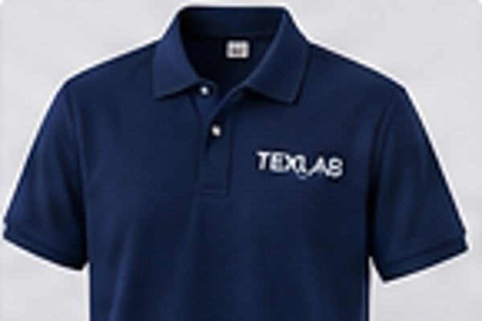

PILIHAN 01
Lacoste Cotton Pique
Rajutan bertekstur khas polo dengan kandungan katun untuk kenyamanan.
Polo untuk seragam perusahaan, tim, komunitas, dan kegiatan. Kenali alternatif bahan dan referensi warna sebelum menentukan spesifikasi pesanan.

Setiap jenis kain memiliki tekstur, kenyamanan, dan kegunaan yang berbeda. Pilihan terbaik bergantung pada desain, aktivitas, anggaran, serta kebutuhan pemakaian.
Konsultasi bahan ↗Rajutan bertekstur khas polo dengan kandungan katun untuk kenyamanan.
Campuran katun dan polyester dengan tekstur rajut polo.
Pilihan berbasis polyester yang ringan dan relatif mudah dirawat.
Berikut beberapa warna yang umum digunakan untuk kategori produk ini.
Konsultasikan desain, jumlah, dan pilihan warna dengan tim Texlab.